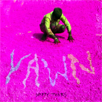
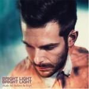

Music Reviews
-

YAWN Happy Tears EP
YAWN’s latest EP, Happy Tears, is the product of incessant touring, intermittent jam sessions and ultimately the sound of band who were desperate to record their music again; a band with something to say. Ten months following the release of their LP Open Season, what are the signals for their next record?
Matt Bevington reviews... -
Bobby Womack The Bravest Man in the Universe
Bobby Womack has nine lives. We probably don't, so check out The Bravest Man In The Universe while you still can.
Randi Dietiker reviews... -

Bright Light Bright Light Make Me Believe In Hope
Confessional electro-pop with a euphoric sheen.
-
S. Carey Hoyas EP
Bon Iver's drummer does a solo EP. Sounds like Bon Iver.
James McKenna reviews... -

Black Dice Mr Impossible
Sixth studio album of experimental noise techno rock from Brooklyn veterans.
David John Wood reviews... -
Neneh Cherry & The Thing The Cherry Thing
This inspired collaboration between the chameleonic Neneh Cherry and avant-garde jazz trio The Thing pushes boundaries and brims with cathartic power.
Stephen Wragg reviews... -
Parlovr Kooksoul
A band for seven years and recording artists for the last four - there has been a fairly intrepid lack of released material from Montréal threesome Parlovr since their self-titled debut in 2008. Their sophomore LP release, Kooksoul, marks a four year gestation period between records with only their Hell/Heaven/Big/Love EP released in late ’10 as an interlude.
Matt Bevington can't wait any longer... -
The Smashing Pumpkins Oceania
Long after the uneventful reemergence of The Smashing Pumpkins, Billy Corgan once again tries his hand at reinstating the band's reputation with Oceania, "an album within an album" in the ongoing Teargarden by Kaleidyscope project.
Juan Edgardo Rodríguez won't wallow in the past... -
Scissor Sisters Magic Hour
It's the fourth album by everybody's mum's favourite sapphic-themed popsters. We all know what to expect.
Mark Davison can't feel the magic... -

Patti Smith Banga
Patti Smith's 11th studio album (and umpteenth project overall) is an ambitious undertaking of current affairs, death, and the world.
Forrest Cardamenis reviews...